<!-- Connected to device: testee -->
<!-- Disconnected from device: Testee -->Step 1 - Use 4diac Locally
This page is part of a guide that gives a walk-through over the major 4diac IDE features.
-
Use 4diac Locally (Blinking tutorial) (YOU ARE HERE!)
In this tutorial you create a simple Blinking application — the "Hello World" of automation programs. It teaches the key workflow of 4diac IDE. The application runs locally, so no external hardware or PLC is needed.
Create a new IEC 61499 System
-
Open the System Perspective: Click the
 system icon in the top-right toolbar (see Step 0 for reference).
system icon in the top-right toolbar (see Step 0 for reference). -
In the top menu bar, go to:
-
In the wizard, name your project BlinkyTest and click Finish.
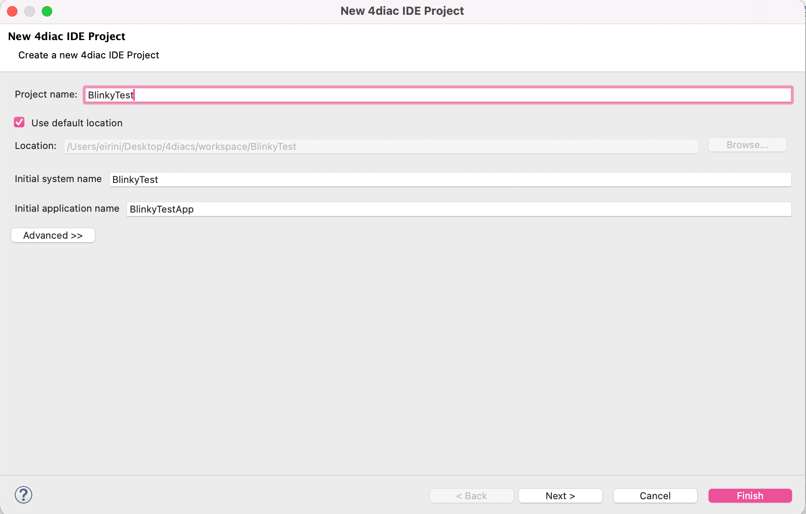
After creating the project, the System Explorer on the left shows the project BlinkyTest with the following items:
-
BlinkyTest [] — the system file; expand it to find BlinkyTestApp (your application) and System Configuration (where you define your hardware/devices)
-
Type Library — the Function Block types available in this project
-
External Libraries — shared type libraries
-
Standard Libraries — standard IEC 61499 type libraries provided in 4diac IDE
-
MANIFEST.MF — a 4diac IDE project manifest file
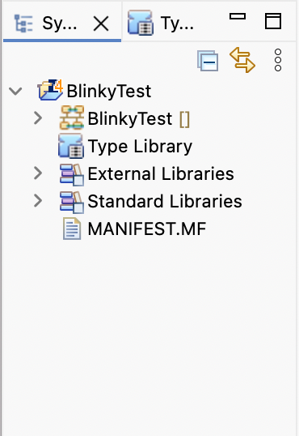
Create the FB Network (Blink Application)
Double-click BlinkyTestApp in the System Explorer to open the Application Editor. Add the following three Function Blocks to the drawing area:
-
E_CYCLE -
E_SWITCH -
E_SR
You can insert a Function Block using any of these methods:
-
Quick Type: Double-click an empty space on the canvas and start typing the FB type name (auto-completion is available).
-
Context Menu: Right-click the canvas → Insert FB and type the name.
-
Drag and Drop: Drag directly from the type library or palette (e.g. the events folder).
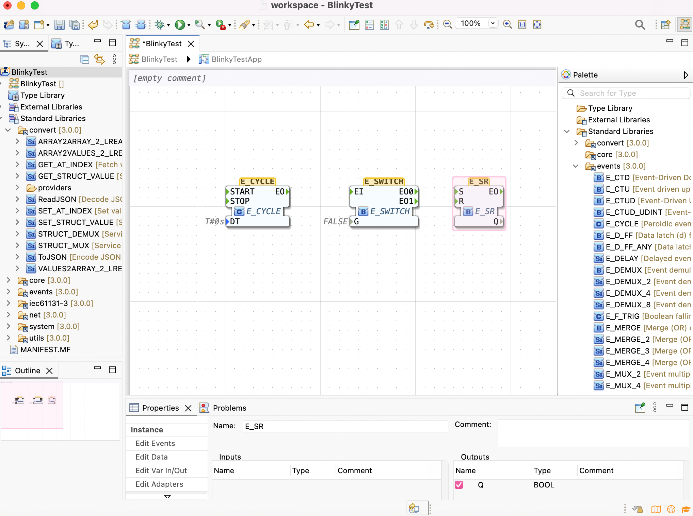
The name in the middle of each block is its type; the name on top is the instance name.
By default, a valid instance name is created from the type name — it is strongly recommended to change it to something representative for a better organised application.
To inspect a block’s definition, right-click it and select .
There you can see the interface and how it works.
Try opening E_SWITCH and E_SR and go to the ECC tab to see how they behave.
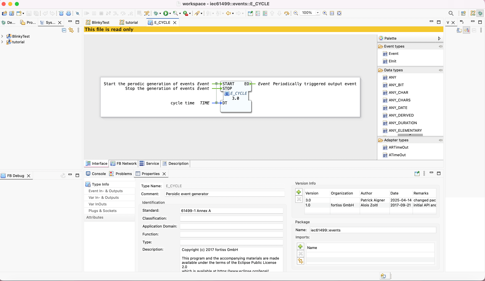
Connect the FBs
There are two types of connections, both created the same way: hover over a pin, click, and drag to the target pin.
-
Event connections (green lines, top part of FBs) — control the execution flow between blocks.
-
Data connections (varying color, e.g. grey for Booleans, lower part of FBs) — pass values between blocks.
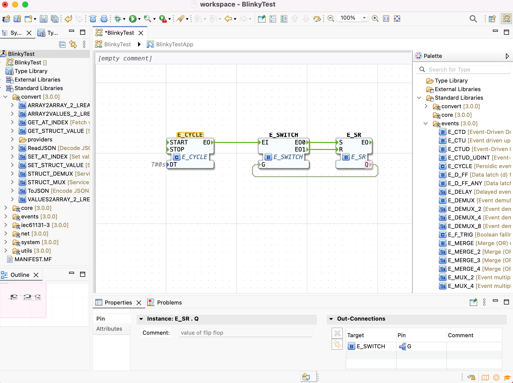
|
Tip
|
Hover over any FB, Data, or Event connection end to see details about it. |
|
Note
|
If you connect Data connections with incompatible types, the mouse pointer turns into a red sign and a tooltip appears explaining the problem. |
Set the Cycle Time (DT Input)
The E_CYCLE block needs a cycle time.
Set DT to T#1s (1 second) using one of these methods:
-
Double-click the DT pin on the left bottom of the
E_CYCLEblock -
Select DT and change the value in the Properties tab below
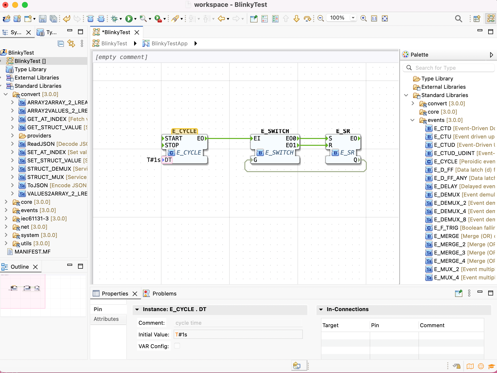
|
Note
|
DT must be set, otherwise E_CYCLE does not know how often to fire.
T#1s means "every 1 second".
|
The blink works as follows: when a START event arrives at E_CYCLE.START, every second E_CYCLE.EO fires.
E_SWITCH routes the event to EO0 when G=0, or EO1 when G=1.
E_SR sets its output Q to TRUE on S and FALSE on R.
Q feeds back to G, so Q toggles TRUE/FALSE every second — blink!
Configure the Hardware (System Configuration)
Double-click System Configuration in the System Explorer to open the System Configuration Editor. Use drag-and-drop from the palette to add:
-
FORTE_PC(a Device) — represents your local computer -
Ethernet(a Segment) — the communication medium
Then connect them by dragging from the Device to the Segment. Your mouse cursor has to turn into the shape of a + to create connections.
The device comes with one EMB_RES resource already.
Rename the device to testee (double-click the name or use Properties below).
Device and Resource parameters can be set directly on the element or via the Properties View (visible when a Device or Resource is selected in the System Configuration Editor or System Manager View). The most important parameters are the IP address and port of the device management interface, as these are required for communication between 4diac IDE and the device — for example, to download an IEC 61499 application.
Check that MGR_ID is localhost:61499 (or similar port).
Check that the Profile is set to HOLOBLOC in the Properties tab.
Device Profile Configuration
The device profile controls which download mechanism 4diac IDE uses to communicate with your device. 4diac IDE currently supports two profiles:
-
HOLOBLOC— for devices conforming to the IEC 61499 Compliance Profile for Feasibility Demonstrations. This includes allFORTEdevices andFBDKdevices older than 2009. -
FBDK2— for FBDK devices version 2 or later.
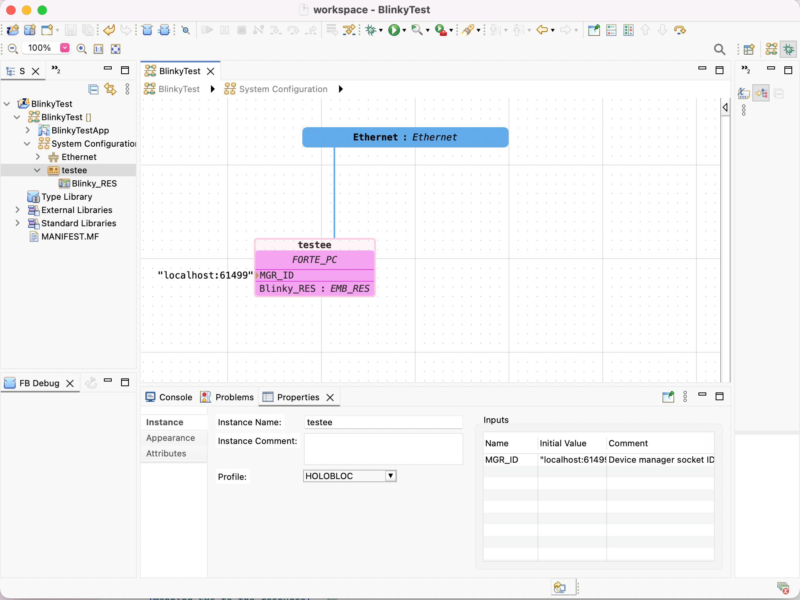
Rename the EMB_RES resource to Blinky_RES (from the Properties).
EMB_RES stands for Embedded Resource — it’s where your FBs will actually run.
Map FBs to the Device/Resource
Go back to the Application Editor (BlinkyTestApp). Select all three FBs (click + drag or Ctrl+A), then:
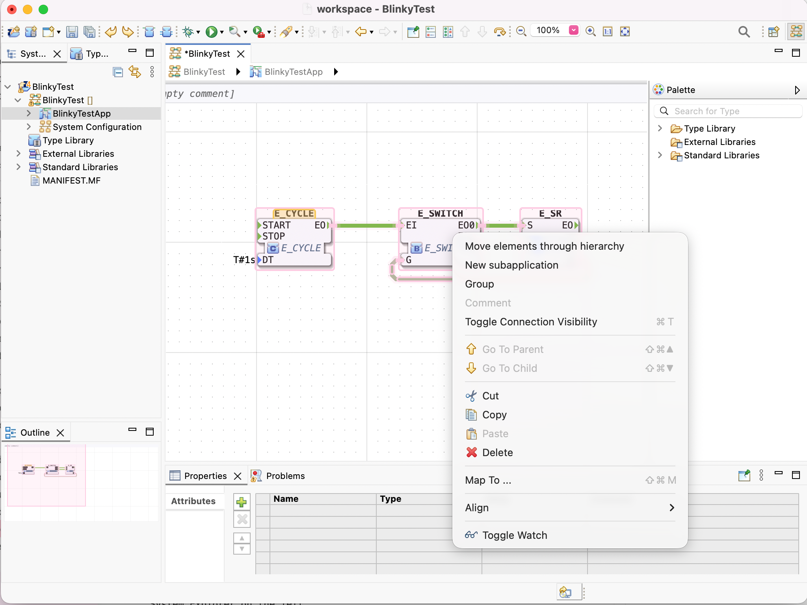
After mapping, the FBs change color to match the device color. To unmap, right-click a FB → .
Configure the Resource (Add START)
Double-click Blinky_RES in the System Explorer (or in System Configuration) to open the Resource Editor. You’ll see:
-
Your mapped FBs (
E_CYCLE,E_SWITCH,E_SR) -
A white
STARTblock — the default starter FB ofEMB_RES
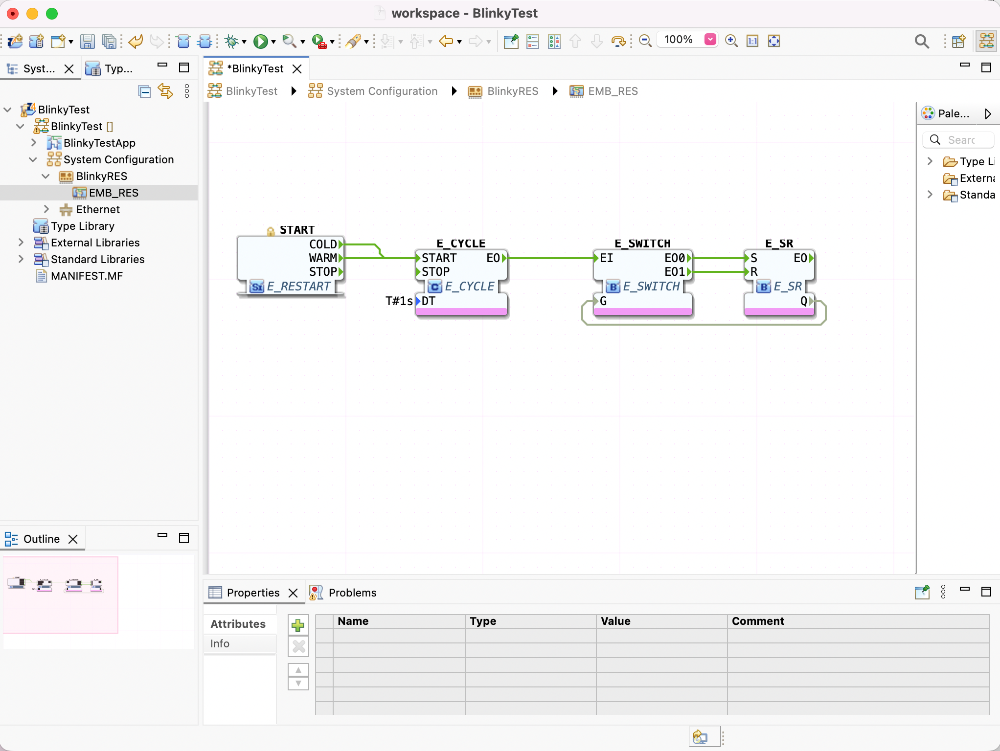
The START block fires the following events:
-
COLD— triggered when the PLC starts -
WARM— triggered when the PLC transitions from a stop state back to a run state -
STOP— triggered when the PLC is set to a stop state
Connect both COLD and WARM outputs of START to E_CYCLE.START.
Deploy to 4diac FORTE
Before deploying, point 4diac IDE to the FORTE executable. Go to:
In FORTE Location, browse to your forte (or forte.exe on Windows) file.
Click Apply and Close.
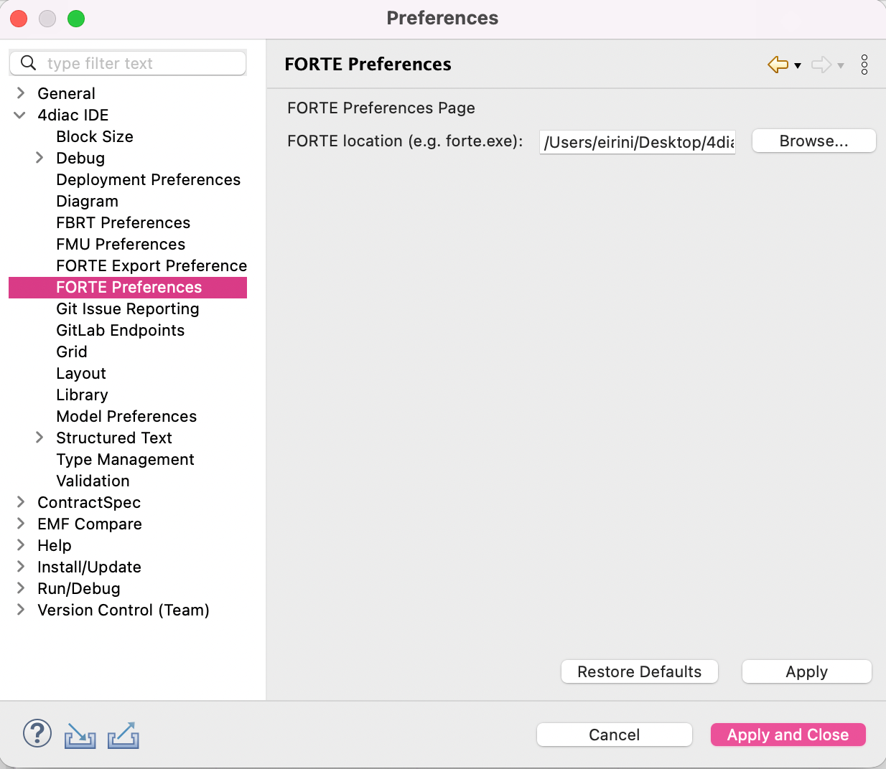
-
Start 4diac FORTE (run the executable locally)
-
In 4diac IDE, click the green Run/Deploy arrow in the toolbar
-
The Console should show:
To redeploy, right-click the Blinky_RES in System Explorer → to wipe it clean, then deploy again.
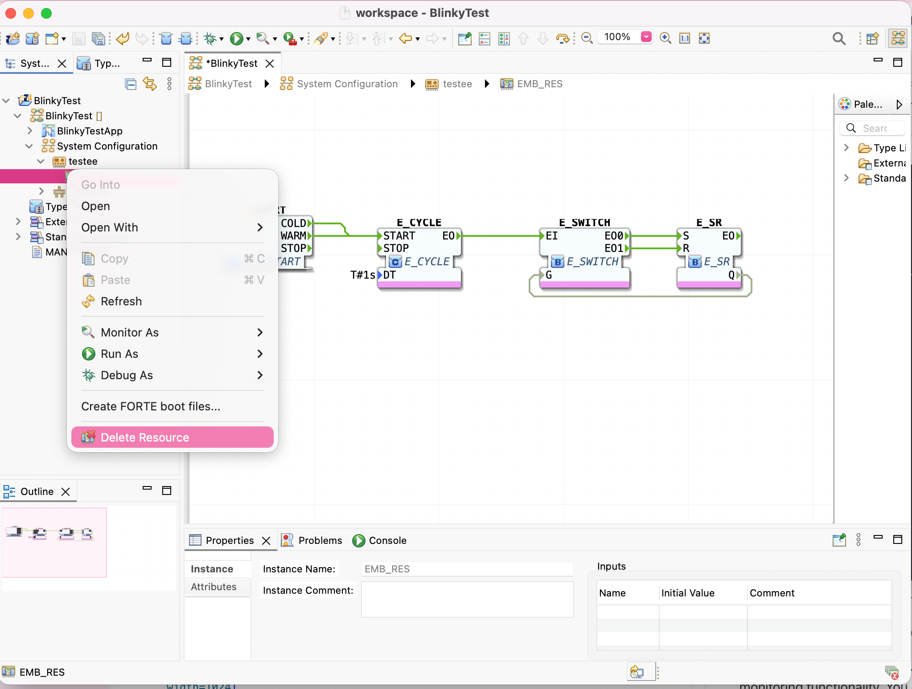
Monitor the Application
To observe the outputs of your Application you can use 4diac’s monitoring functionality. You can enable it in the Toolbar under the Toolbar icon: or doing the following:
-
Change to Debug Perspective using the button.
-
In the System Explorer, right click on the System → Monitor As → Monitor
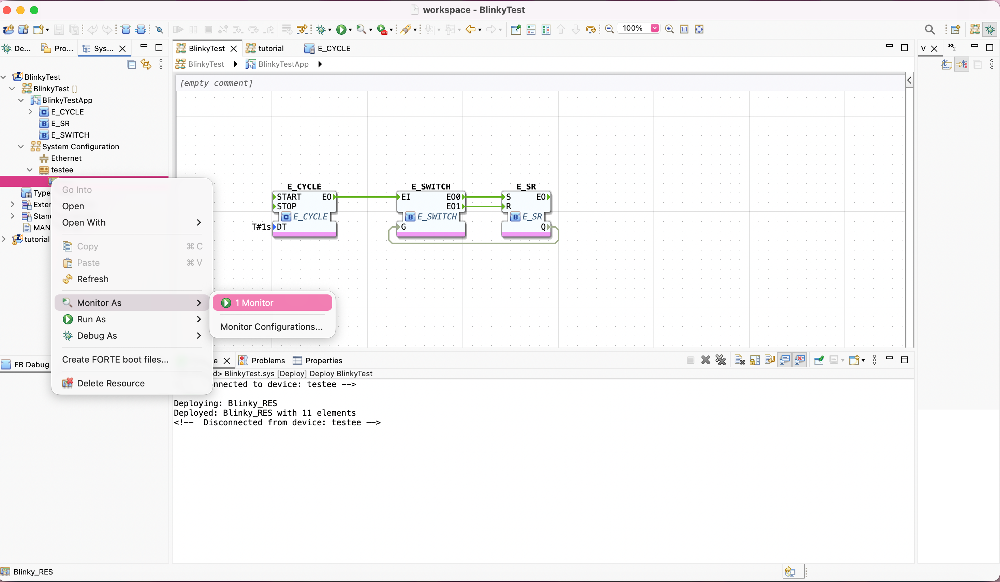
A green circle will appear in the system icon indicating that monitoring is enabled for the system.
Once monitoring is active, you can watch variables in the Resource Editor in two ways:
-
Right-click an FB → to watch all its variables at once.
-
Right-click a variable or pin → to watch a single value.
You can also use from the same menu to manually override a value.
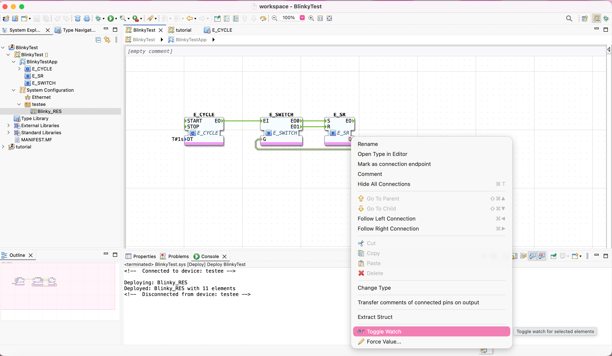
The watched values appear in the Watch panel on the right.
You’ll see Q alternating between true and false every second — your light is blinking!
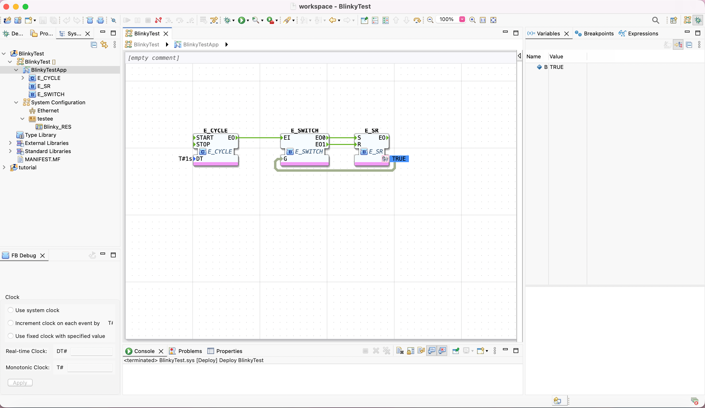
You can also trigger events manually by right-clicking on a pin and selecting .
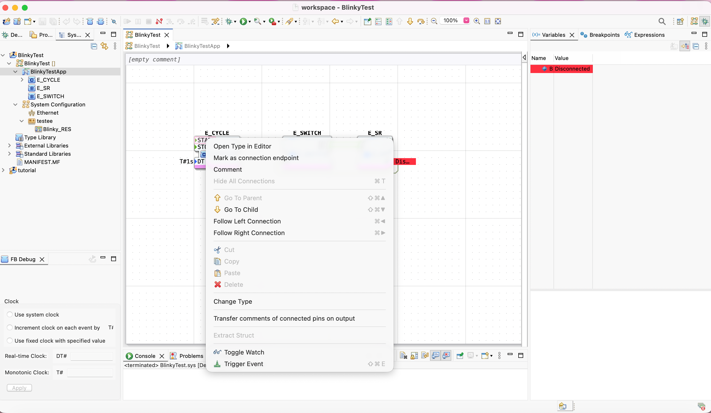
Quick Reference
| Element | How to Create | Tutorial Name |
|---|---|---|
System |
BlinkyTest |
|
Application |
Auto-generated |
BlinkyTestApp |
System Configuration |
Auto-generated (one per system) |
— |
Device |
Drag from palette (System Configuration Editor) |
testee |
Resource |
System Configuration Editor |
Blinky_RES |
Where to go from here?
-
Now that you know how to do a centralized solution, let’s try and distribute things:
Step 2 - Distribute 4diac Applications -
If you want to go back to see an overall overview of 4diac IDE:
Step 0 - 4diac IDE Overview -
If you want to go back to the Start Here page:
Where to Start